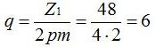
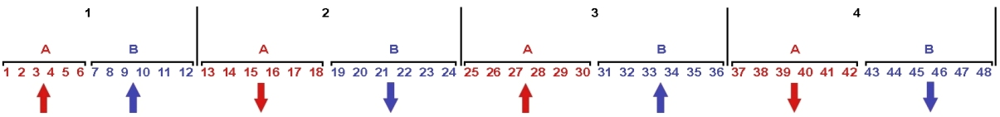
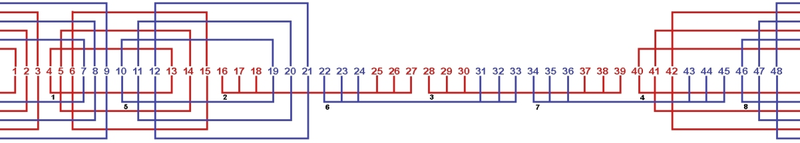
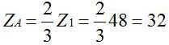
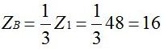
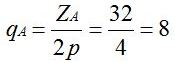
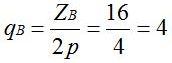
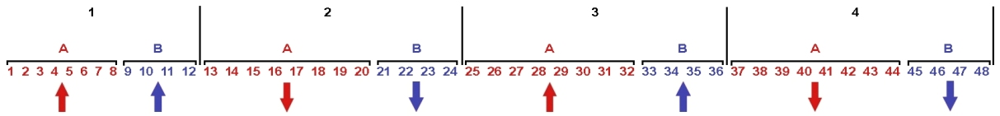
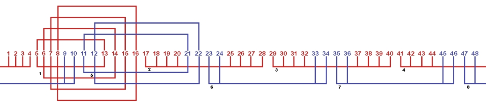

Перейти на главную страницу справочника.
Как рассчитать схему укладки обмотки в пазы однофазного односкоростного асинхронного электродвигателя.
Задача: требуется рассчитать схему укладки однофазной обмотки в статор с количеством пазов Z1=48, 1500 оборотов в минуту 2p=4.
- Рассчитать схему укладки однофазной обмотки можно двумя способами.
Пример расчета схемы укладки №1.
- Число пазов на полюс и фазу, где q - число пазов на полюс и фазу, Z1 - количество пазов статора, 2p - число полюсов, m - количество фаз.

Так как в однофазных обмотках две обмотки рабочая и пусковая, то и количество фаз для формулы: m=2. Вписываем в формулу данные электродвигателя, число пазов на полюс и фазу: q=6.
Получилось что в одном полюсе 6 пазов занимает рабочая обмотка и 6 пазов занимает пусковая обмотка, общее количество пазов в полюсе 6+6=12. - Число пазов на полюс и фазу получилось: q=6. На рисунке №1 размечаем пазы статора скобами по 6 пазов. Над каждой скобой обозначаем наименование рабочей и пусковой обмотки, рабочую обмотку обозначаем А, пусковую В. Делим сердечник статора на 4 полюса 2p=4. В каждом полюсе 6 пазов для рабочей обмотки и 6 пазов для пусковой: вертикальная линия между пазами 12 и 13, 24 и 25, 36 и 37, 48 и 1. Стрелки в нижней части рисунка показывают направление мгновенных значений тока в полюсах.
Рис. 1 
{kind=link}
- На основании полученного рисунка №1 составляем схему укладки обмотки в пазы статора. Составление схемы укладки рисунок №2 начинаем с первого полюса рабочей обмотки А. Конечно можно взять шестисекционную катушку и уложить одну сторону в пазы 1 2 3 4 5 6, а другую сторону катушки в пазы 13 14 15 16 17 18, но такие обмотки не применяются по причине большого вылета лобовых частей. Поэтому разделим шесть секций пополам и расположим трёхсекционные катушки в разные стороны (вразвалку). Одна сторона секции первой катушки ложится в паз 4, другая в паз 13 полюса №2, вторая секция в пазы 5 и 14, третья секция в пазы 6 и 15. Получилась катушка состоящая из трех секций с шагом у=9 (1-10), секции в катушке соединяются последовательно. Далее рисуем вторую катушку рабочей обмотки, затем третью и так далее вправо по рисунку пока не заполнятся все пазы принадлежащие рабочей обмотке. Составление схемы укладки для пусковой обмотки начинаем с первого полюса В, порядок укладки такой же как у рабочей обмотки.
Рис. 2 
{kind=link}
- Составление схемы укладки завершено, равнокатушечную (равносекционную) обмотку преобразуем в концентрическую рисунок №3. После завершения составления схемы укладки переходите к выбору начал фаз в обмотке.
{kind=link}
Пример расчета схемы укладки №2.
- В этом расчете рабочая обмотка занимает 2/3 пазов статора, а пусковая 1/3 пазов статора.
- Общее количество пазов для рабочей обмотки, где ZA - количество пазов занимаемых рабочей обмоткой, Z1 - общее количество пазов статора. По расчету получилось: ZA=32.

- Общее количество пазов для пусковой обмотки, где ZВ - количество пазов занимаемых пусковой обмоткой, Z1 - общее количество пазов статора. По расчету получилось: ZВ=16.

- Число пазов на полюс и фазу для рабочей обмотки, где qA - число пазов на полюс и фазу для рабочей обмотки, ZA - количество пазов занимаемых рабочей обмоткой, 2p - число полюсов. По расчету получилось: qА=8.

- Число пазов на полюс и фазу для пусковой обмотки, где qВ - число пазов на полюс и фазу для пусковой обмотки, ZВ - количество пазов занимаемых пусковой обмоткой, 2p - число полюсов. По расчету получилось: qВ=4.

- Число пазов на полюс и фазу получилось: для рабочей обмотки - qА=8, для пусковой обмотки - qВ=4. На рисунке №4 размечаем пазы статора скобами: 8 пазов для рабочей обмотки, 4 паза для пусковой. Над каждой скобой обозначаем наименование рабочей и пусковой обмотки, рабочую обмотку обозначаем А, пусковую В. Делим сердечник статора на 4 полюса 2p=4. В каждом полюсе 8 пазов для рабочей обмотки и 4 паза для пусковой: вертикальная линия между пазами 12 и 13, 24 и 25, 36 и 37, 48 и 1. Стрелки в нижней части рисунка показывают направление мгновенных значений тока в полюсах.
Рис. 4 
{kind=link}
- На основании полученного рисунка №4 составляем схему укладки обмотки в пазы статора. Составление схемы укладки рисунок №5 начинаем с первого полюса рабочей обмотки А. Конечно можно взять восьмисекционную катушку и уложить одну сторону в пазы 1 2 3 4 5 6 7 8, а другую сторону катушки в пазы 13 14 15 16 17 18 19 20, но такие обмотки не применяются по причине большого вылета лобовых частей. Поэтому разделим восемь секций пополам и расположим четырехсекционные катушки в разные стороны (вразвалку). Одна сторона секции первой катушки ложится в паз 5, другая в паз 13 полюса №2, вторая секция в пазы 6 и 14, третья секция в пазы 7 и 15, четвертая секция в пазы 8 и 16. Получилась катушка состоящая из четырех секций с шагом у=8 (1-9), секции в катушке соединяются последовательно. Далее рисуем вторую катушку рабочей обмотки, затем третью и так далее вправо по рисунку пока не заполнятся все пазы принадлежащие рабочей обмотке. Составление схемы укладки для пусковой обмотки начинаем с первого полюса В, порядок укладки такой же как у рабочей обмотки, количество секций в катушке 2, шаг у=10 (1-11)
Рис. 5 
{kind=link}
- Составление схемы укладки завершено, равнокатушечную (равносекционную) обмотку преобразуем в концентрическую рисунок №6. После завершения составления схемы укладки переходите к выбору начал фаз в обмотке.
{kind=link}
15.12.2011 г.
Литература по данной теме:
Клоков Б.К. "Обмотчик электрических машин" 1987 г.